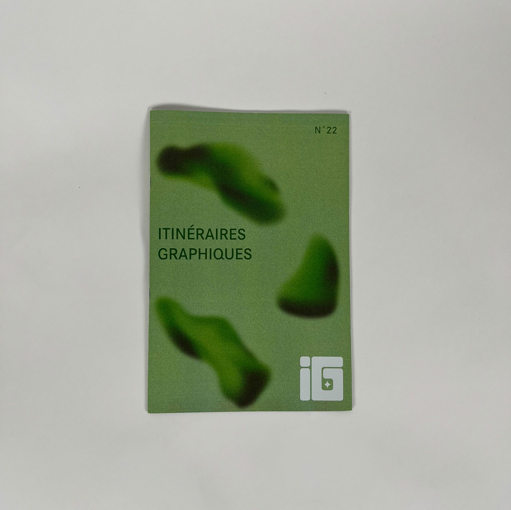
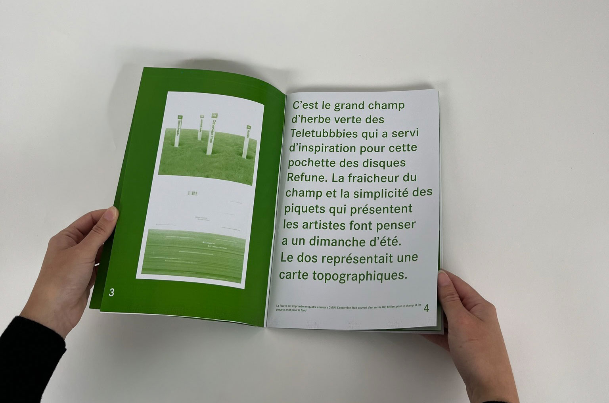
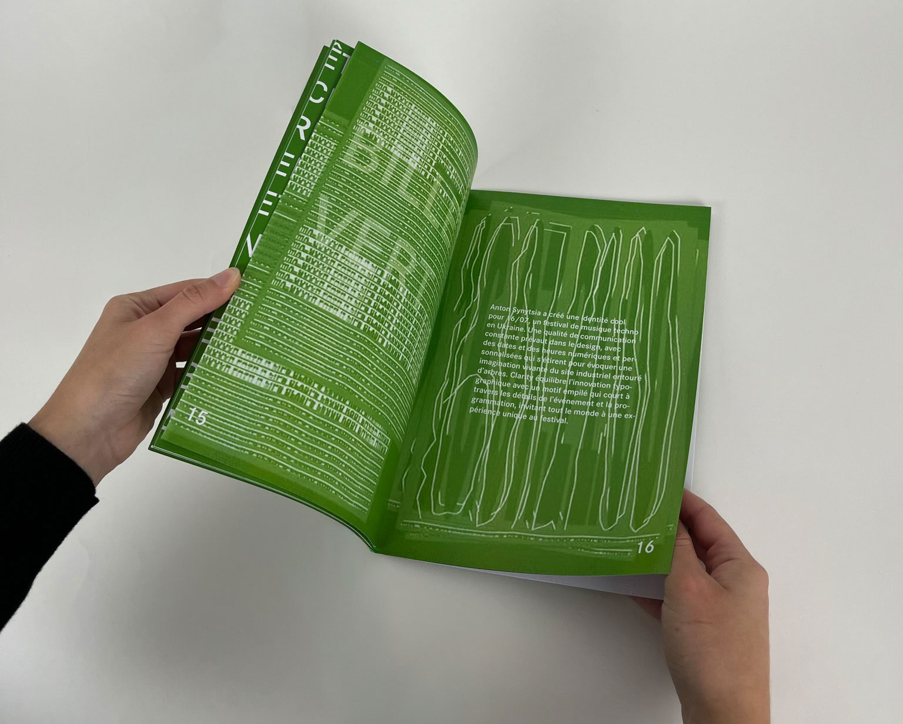
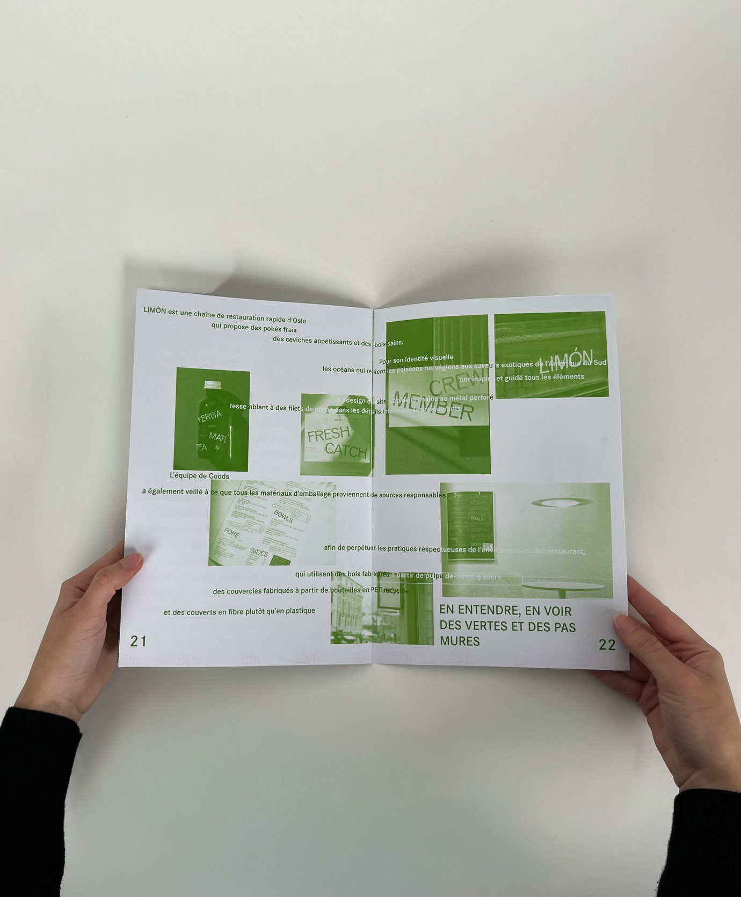
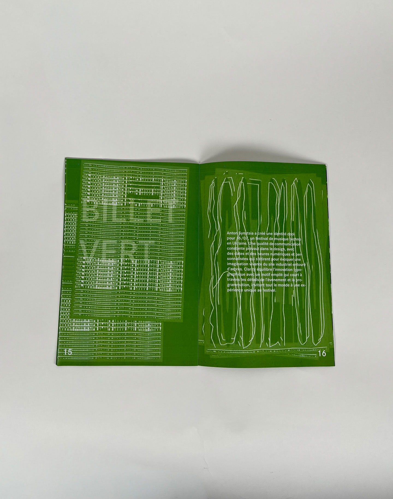
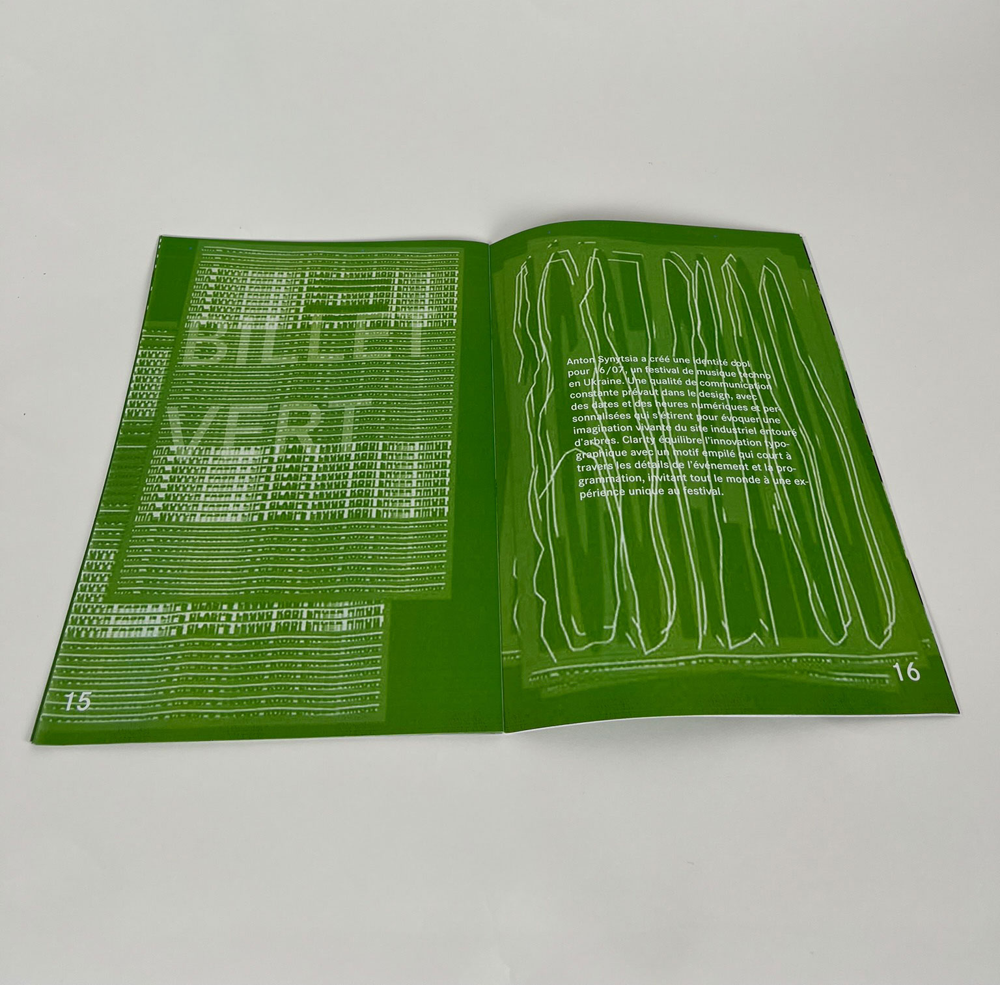
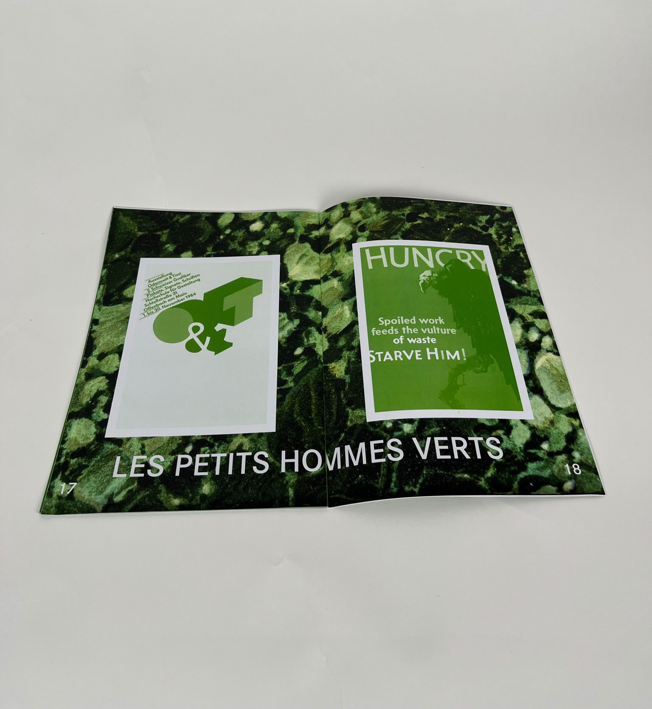

Magazine vert
Itinéraire graphique est un projet composé de plusieurs numéros, chacun étant créé par une personne différente à partir d'un magazine de référence choisi comme source d'inspiration. Pour ce numéro, c'est le magazine Tools qui a servi de point de départ. La parenté entre les deux publications tient notamment au principe d'un mot-fil conducteur autour duquel le magazine s'organise ; ici, ce mot est “vert”.
Ce numéro rassemble un ensemble d'œuvres qui explorent, mobilisent ou mettent en valeur la couleur verte. Toutes les ressources présentées proviennent du centre de documentation de l'ESAD, ce qui ancre le projet dans une véritable démarche de recherche visuelle et matérielle.
Date du projet : mai 2025






